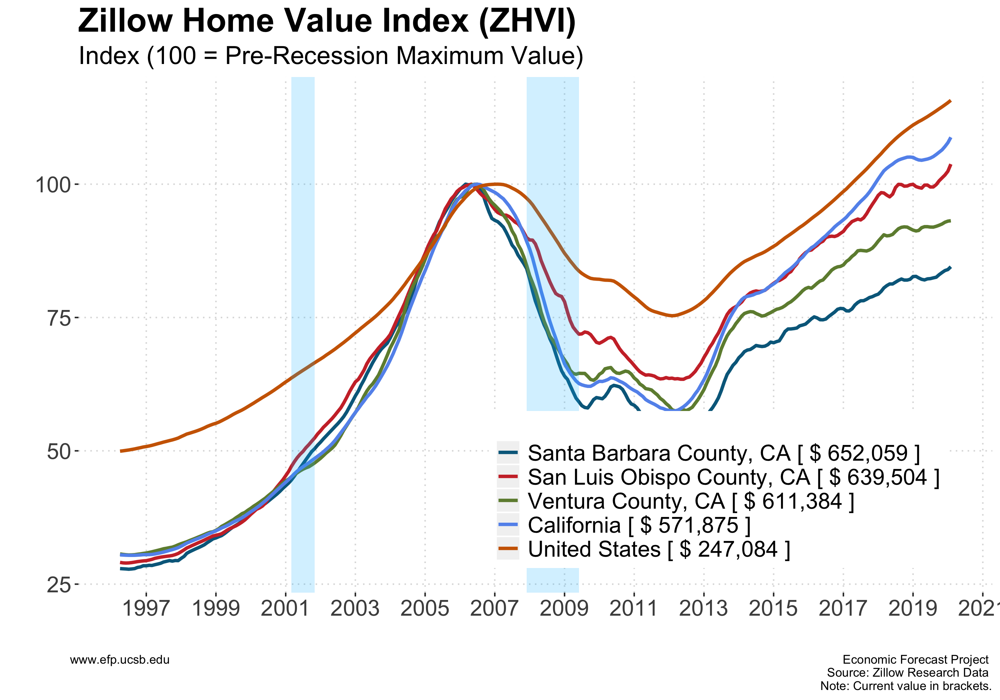
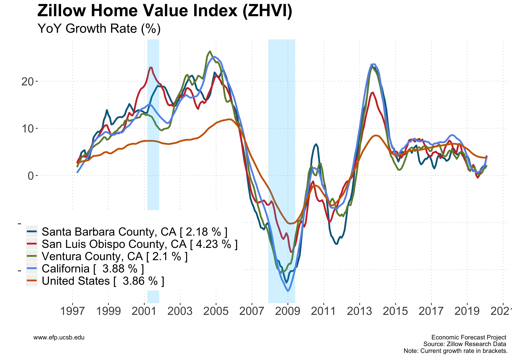
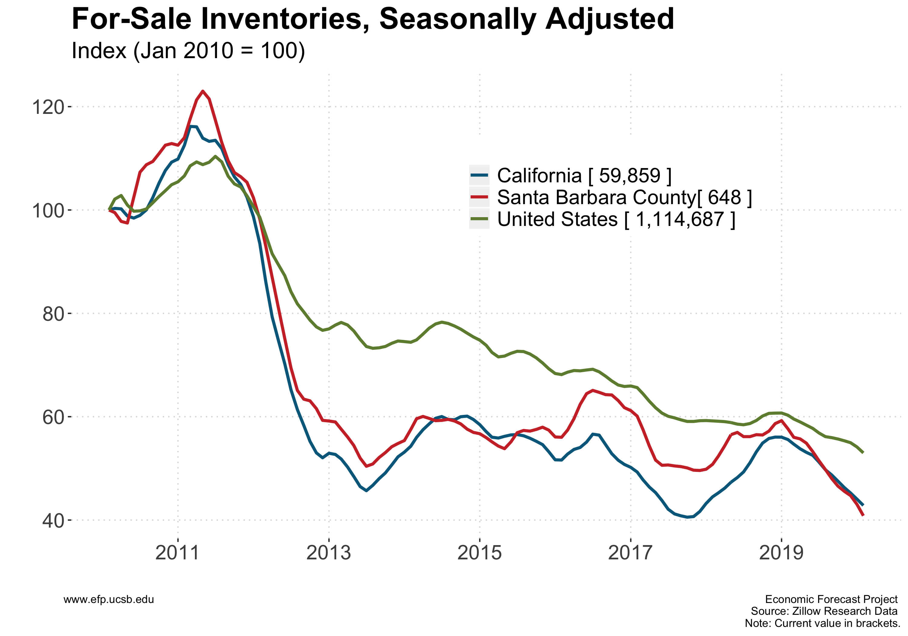
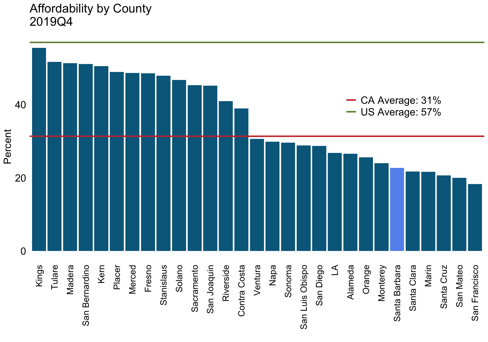
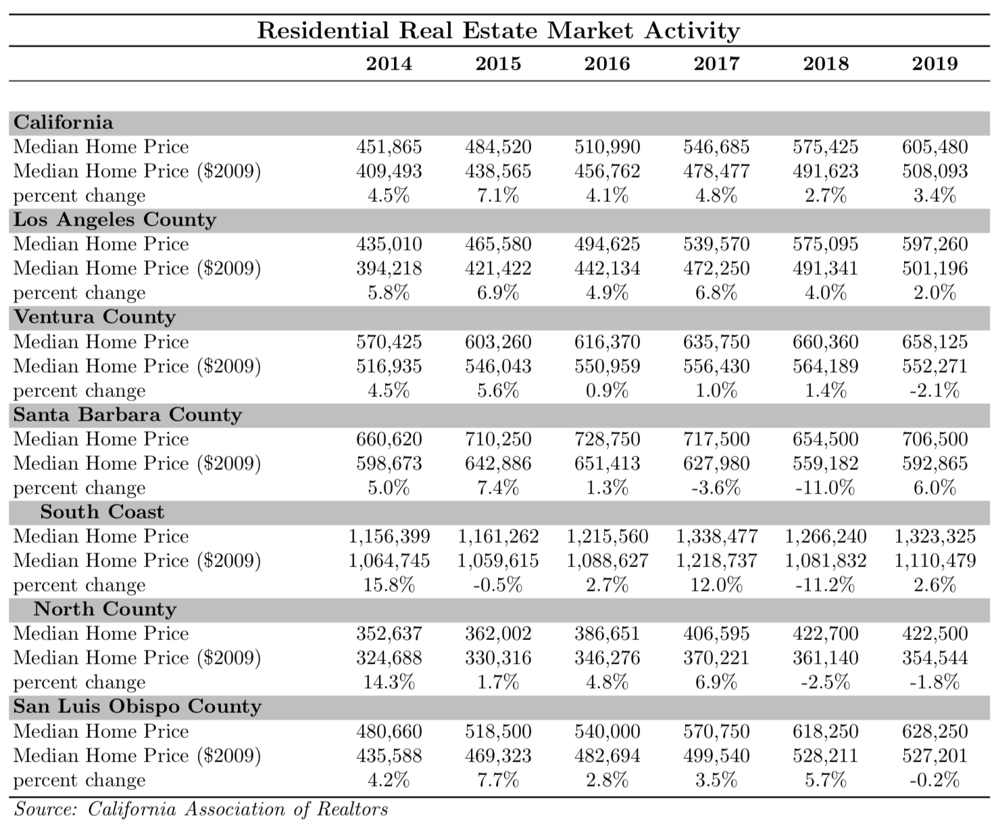
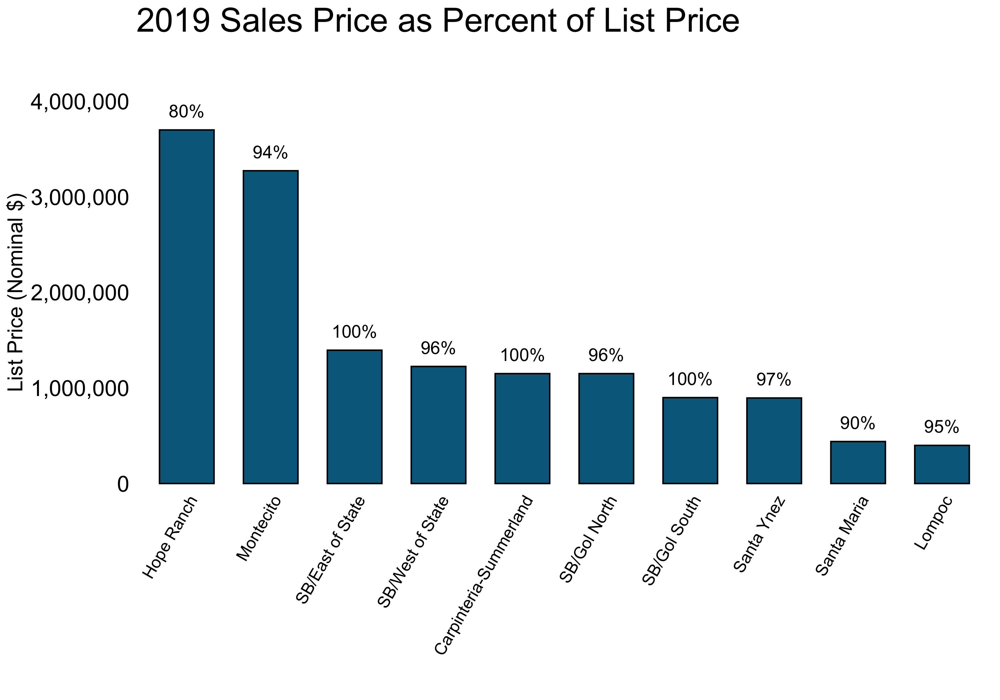
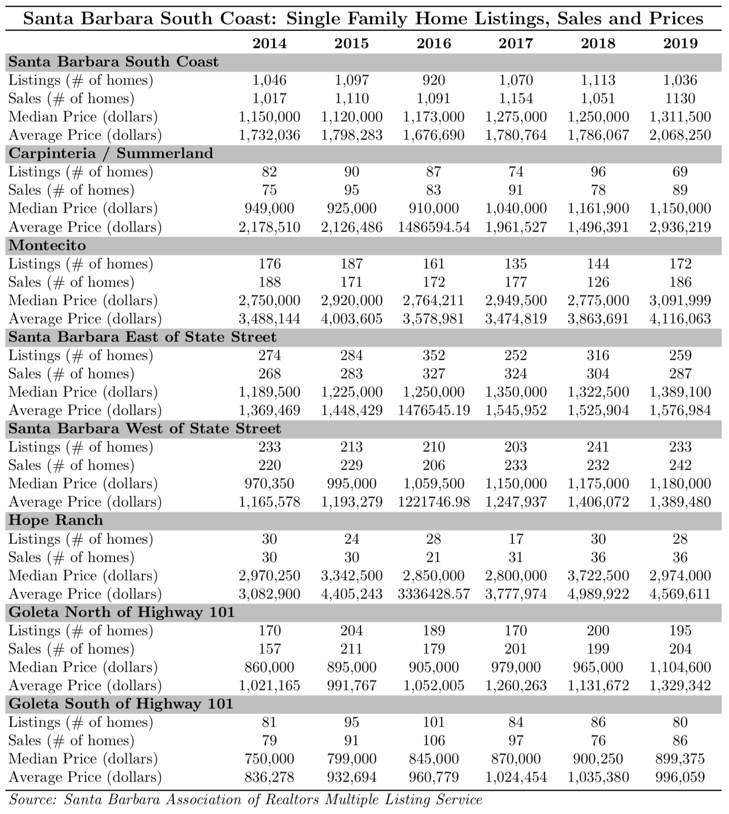
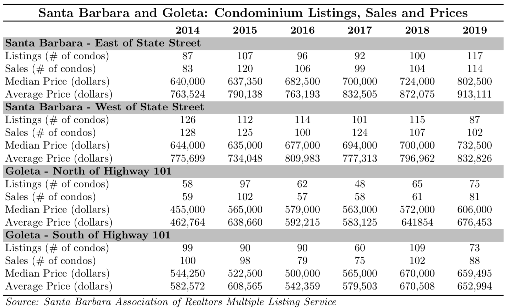
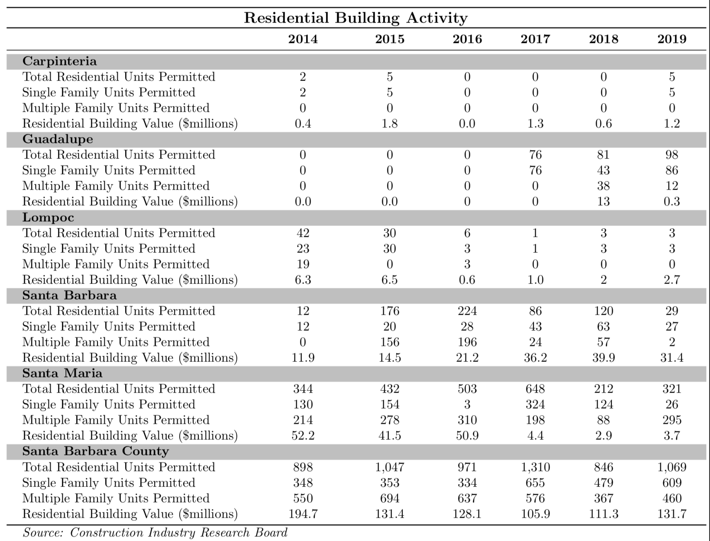

Chapter 6 Real Estate
6.1 Residential
Real Estate Residential Real Estate Key Points:
- YoY growth in Santa Barbara County median home values experienced a U-shaped dip throughout 2019 and have since returned to values implied by its secular trend.
- The Santa Barbara County and Housing Affordability Index fell from 32% to 23% and once again sits below the average for all of California.
- The real median home price for Santa Barbara County rose by 6% in 2019 compared to a 3.4% increase in California.
- Residential building activity rebounded in 2019 to 1,069 units permitted, consistent with past biennial cyclical behavior.
Santa Barbara County’s housing market continued its growth in terms of home values, albeit at a slower rate. From January 2019 to January 2020, the Zillow Home Value Index, an estimate of the median home value, for Santa Barbara County increased from $642,288 to $651,801, a 1.47% change. This is down by over half of last year’s growth in home values of 3.98% increase. The median home price in Santa Barbara County throughout 2019 ($643,119) remains below its pre-recession high of $692,400 in January of 2006. Conversely, median prices in the overall US and California housing market have both remained above their pre-recession peaks. All 3 geographies experienced declines in Year over Year (YoY) growth rates of home values starting in January 2014. These declines continued throughout 2019. In fact, 2019 saw a large dip in home value growth beginning in March, reaching a minimum between July and September depending on the region under consideration. Throughout this period, year over year growth of Santa Barbara County home values reached a minimum of 0.42%. Neighboring San Louis Obispo County, however, fared much worse, reaching a minimum of -0.30%. Since then, home value growth has rebounded back to its secular trend. Of particular interest is that, while the United States as a whole also experienced a dip of sorts, the decline and subsequent rebound in year over year growth is most dramatic for the entirety of the State of California. Given the size of California, and the relative value of its housing market compared to the rest of the United States, the decline in year over year growth for the country may be driven in large part by California alone.



Inventories, calculated as the estimated number of median homes for sale in a given region, decreased across all three geographies (Santa Barbara County, California, and the US) following last year’s rebound. Santa Barbara experienced a decline in inventories from a peak of 939 in January 2019 to 614 in March 2020. California saw an even larger decrease in levels, from a peak of 78,265 in December 2018 to 58,293 in March 2020, though the decline in Santa Barbara County was larger in relative terms. This dip in inventories across the United States, while still present, is much smaller than that in both California and Santa Barbara County housing markets and appears to be a return to the Country’s secular trend in inventories beginning in 2013. Take note of the fact that declining inventories could be due to one or more of many different supply and demand forces, and how efficiently real estate markets match buyers with sellers. The health of local housing markets depends crucially on the source of the change in inventories and not simply the stock of inventories itself.
Affordability
The Housing Affordability Index from the California Association of Realtors gives the percentage of households in California counties that can afford to purchase the median-priced house in their respective areas. On a national level, 57% of United States residents could afford the median-priced house in the country during 2019Q4, an increase of 3 percentage points relative to last year. California’s Housing Affordability Index is much lower than the national average, with 31% of California residents being able to afford the median-priced house in the state. Santa Barbara County falls further below this number at 23%. This is a significant decline from last year’s 32% and places it below the California average. Moreover, Santa Barbara County is now ranked the 6th least affordable county of the 49 counties for which data is available.

Housing Prices and Sales
Home Price data from the California Association of Realtors shows that real median home price for Santa Barbara County increased by 6% over the last year, roughly double the 3.4% growth in prices for California and triple the 2.0% growth rate for Los Angeles County. When looking separately at North County and the South Coast, the median home price in the South Coast rose by 2.6% whereas the median home price in North County fell by 1.8%. The discrepancy between the aggregate and disaggregated numbers is likely due to the fact that North County prices are driving down the level of median prices for the county and the increase in prices in the South Coast is driving the change in prices for the County as a whole.

Sales Price vs. List Price When comparing list prices and sales prices, the median home sales price is close to the median list price in Santa Barbara County, though all areas in Santa Barbara City and Goleta show that bargaining between property owners and buyers results in a price reduction. This may be indicative of a higher bargaining power on the part of buyers. In fact, no geography consider boasts a sale price higher than the listing price. This contrasts with 2018, when Hope Ranch, for example, maintained a sale to list price ratio of 110%. Throughout the County, the lowest sales price as a percent of the list price was 80% in Hope Ranch. List prices vary significantly between cities, with Hope Ranch being the most expensive and Lompoc being the least expensive. Median list prices for these two geographies are $3,699,500 and $399,000, respectively.

SB South Coast: Single Family Home Listings, Sales and Prices
Hope Ranch mean and median sale prices declined substantially in 2019, from $4,989,922 to $4,569,611 and $3,722,500 to $2,974,000, respectively. This represents the largest level change in the Santa Barbara South Coast region and brings Hope Ranch’s median home price back in line with historic prices after stark rise in 2018. Santa Barbara East of State Street and Goleta North of Highway 101 saw very modest changes in median and mean home prices. The largest increase in mean home prices during 2019 is in the Carpinteria/Summerland region, with average prices rising from $1,496,391 to $2,936,219. Given that the median price saw a very small decline, it is likely the case that a small number of high value sales is skewing the average for the Carpinteria/Summerland area.

Santa Barbara and Goleta: Condominium Listings, Sales and Prices
The Santa Barbara and Goleta condominium price data from the Santa Barbara Association of Realtors Multiple Listing Services shows that all areas with the exception of Goleta-South of Highway 101 experienced an increase in both the mean and median price of condos. Moreover, both the number of listings and number of condo sales rose in Santa Barbara-East of State Street and Goleta-North of Highway 101. Santa Barbara-West of State Street and Goleta-South of Highway 101 saw a decline in both condo listings and sales.

Housing Permits
In Santa Barbara County, total residential unit permits rebounded from last years decline to 1,069. The data herein presented suggests that this type of cyclical behavior is a central characteristic of the Santa Barbara County real estate market, at least over the past 6 years. Both single family unit permits and multi-family unit permits increased, from 479 to 609 and 367 to 460, respectively. Moreover, the share of multi-family permits declined from 57% to 43%. Carpinteria and Guadalupe both experienced a decline in multifamily unit permits and an increase in single family unit permits. Santa Maria on the other hand had a large decline in single family unity permits and a more than tripling of multifamily unit permits.

Santa Barbara County South Coast Apartment Rental Market
Guest Author: Dawn Dyer
Dyer-Sheehan Group
In preparation.
—
6.2 Commercial
Hayes Commercial Group
South Coast Commercial Real Estate – 2020 Midyear Market Report
Guest Authors: Greg Bartholomew, Christos Celmayster, Francois DeJohn, Steve Hayes, Dan Moll, Liam Murphy, and Kristopher Roth
Adapting to the coronavirus economy and the “new abnormal”
Against the backdrop of the coronavirus pandemic, South Coast commercial real estate—like the economy in general—is in low gear. Transaction volume is down significantly compared to previous years, providing limited data to re-establish pricing for the market. In addition, the variability in the economy—with cycles of opening and closing—creates a rollercoaster effect that keeps property values in flux. Here are the highlights:
- Transaction value decreased 68% for sales and 44% for lease consideration, compared to the prior 5-year averages.
- Transactions hit a trough in April and May, but recovered momentum in June and into July.
- Since the beginning of the year, for sale inventory expanded 19% while total available space for lease stayed level.
- Prices and rents have not decreased significantly, so far.
- Demand is soft and will likely remain so for the foreseeable future.
- However, deals are happening and there is opportunity in the current market.
It will be interesting to see how the resurgence of coronavirus infections in July will affect both the economics and psychology of commercial real estate transactions. The impact of drawing down the economy again will be substantial, but the shock mentality that prevailed in the spring months will be less of a factor, as consumers and businesses have more experience with pandemic conditions. On the other hand, if PPP loans dry up, children aren’t able to consistently attend school, and people continue to stay home, this fall could bring a rash of business closings, increased unemployment, and a widening gap between supply and demand in the commercial real estate sector. On the bright side, the activity we are seeing—new requirements, showings, and deals in negotiation—is cause for optimism and a reminder that the pandemic will not go on forever. In addition, as with any major inflection point in the economy, there will be opportunities in the market, particularly for owner-users and tenants.
COMMERCIAL SALES
Following a record year in 2019, South Coast commercial sales dollar volume was very low through midyear. This is not surprising, given the devastating impact of COVID-19 on the local economy. However, dollar volume in January and February—before the pandemic took hold—was down 66% year-over-year compared to 2019. Activity remained sporadic in the subsequent months, yielding the lowest midyear totals for both transactions and dollar value since 2009.
On the positive side, after hitting a low of just one transaction in May, sales activity gathered momentum in June that has continued into July. Most notably, the oceanfront office campus that serves as Procore’s headquarters with an asking price of $48 million was purchased by an investor at the beginning of July, by far the largest sale of the year to date. Our brokers report that there is noticeably more happening compared to April and May when the market seemed to be in shock.
 This 24,772 SF office building at 1145 Eugenia Pl in Carpinteria was one of the few notable investment sales, trading for $9 million.
This 24,772 SF office building at 1145 Eugenia Pl in Carpinteria was one of the few notable investment sales, trading for $9 million.
The low deal volume provides scant data to indicate the extent to which the pandemic is affecting property values. The handful of investment sales suggests cap rates have not moved meaningfully. We know anecdotally that buyers have been seeking a “COVID-19 discount,” and some sellers are conceding. However, such discounts have been relatively modest, and if there are buyers trying to exploit the crisis to get a great deal, they haven’t succeeded so far. The prices of off-market transactions are also in line with recent historical values.
Off-market deals represented 58% of transactions to date, whereas the typical ratio is well below half. This may be a statistical aberration due to limited data, but off-market transactions typically correlate with strong demand. The most notable off-market sale was 5551 Ekwill St in Goleta, an 11,200 SF industrial/office building purchased by an owner-user for $3.7 million in June.
Owner-users have not played as prominent a role in the market as in recent years. Through midyear, 42% of sales were purchased by owner-users, a typical ratio historically but a decrease from the past two years, during which more than half of sales were owner-user purchases. In 2018-2019 investor demand contracted somewhat, while owner-user demand surged. So far this year, both buyer types have retreated, while returning to their typical ratios with about 60% of transactions to investors and 40% to owner-users. The standout investment sale of the first two quarters was 1145 Eugenia Pl, a 24,772 SF office building in Carpinteria that sold for $9 million in March. A mixed-use building in Summerland, 2560 Lillie Ave, was the highest-value owner-user sale to date, trading for $4.2 million in February.
In times of economic stress, uncertainty clouds property values, and buyers and sellers both take a cautious approach to pricing. There are 75 properties for sale, which is a historic high for the South Coast and represents a 19% expansion since the beginning of the year. There is ample property for sale, and there are a decent number of buyers in the market. The main factor inhibiting deals is price. Investors are building significant risk into their offers, since there are so many economic unknowns, and seem content to wait for sellers to blink. Sellers appear willing to accept a small discount to make a deal, but most would prefer to ride out the storm rather than accept a major price cut. In this environment, owner-users may find opportunities to purchase vacant property at relatively low prices. Barring a major breakthrough in the public health crisis, such as a vaccine, we expect the gap between investors and owners on pricing to constrict transaction volume for the remainder of 2020.
LEASING
In general, the leasing markets progressed through a profound dip in transaction activity from March through May, producing some of the lowest monthly volumes on record. Transactions and consideration were less than half of the prior 5-year monthly average (as seen in the graph). In June, leasing activity rebounded to the more typical level seen in the first two months of the year, as more businesses started opening back up.
Midyear gross absorption for all property types was about 40% below the prior 5-year average. As a new surge of coronavirus cases flares up in July, there will likely be some slow leasing months again in the third quarter, and fits and starts in the market may be expected throughout the course of the pandemic.OFFICE
Office leasing volume is down on the South Coast, but the combined vacancy rate since year-end has been flat. By and large, tenants have continued paying rent while many if not most of their employees work from home. Uncertainty about what comes next makes forecasting demand for office property especially tricky. What percentage of workers will shift to working from home long-term? For those who return to the office full-time, what will the employee density expectation be? The time horizon is also uncertain. If a reliable vaccine or instant testing emerges to give workers confidence working in close proximity, the office environment could rapidly return to pre-COVID configurations. However, if contagion remains a persisting concern over a longer term, office tenants will be faced with a combination of workspace partitioning, distancing, and other measures affecting how space is used. The answers to these questions could have enormous impact on the office market.
Santa Barbara
Santa Barbara’s office market has been in a cycle of elevated inventory for the past few years, with vacancy around 6%. Despite relatively low leasing volume, the first half of the year brought only a slight expansion to a 6.1% vacancy rate, the highest rate on record. About half of the available space has been on the market for more than a year, reflecting some stagnancy in the inventory. There are five spaces larger than 10,000 square feet available downtown. The largest, 26,000 SF at 402 E Gutierrez St, is creative space geared for tech. The other four are professional offices in named buildings—the Semler, Lyon, Freitas, and Grayson buildings—totaling 62,000 SF. Professional office, with a higher proportion of individual offices to facilitate distancing, could attract relatively high demand over the next few years, compared to the open, collaborative areas long favored by creative office tenants. Still, given current demand, these large vacancies will take some time to absorb.
Leasing activity as measured by gross absorption was 28% below the prior 5-year average. Also telling, 42% of the transactions were renewals, compared to 20% in 2019, indicating the drop in demand among tenants looking for a new space. Both asking and achieved lease rates have held steady, so far, and in fact achieved rates are actually up about 8% compared to 2019, thanks to a handful of high-rent leases on Coast Village Road and near Cottage Hospital. If competition for tenants heats up, asking rents in Santa Barbara—which are 40% higher than in Goleta—will come under increasing pressure. Notable transactions in the second quarter were American Riviera Bank’s renewal of 12,939 SF at 1033 Anacapa St, Mercer Advisors’ renewal of 10,935 SF at 1801 E Cabrillo Blvd, and a new lease of 4,993 SF at 2400 Bath St by Santa Barbara Cardiovascular Group.
 Two leases totaling 31,500 SF were signed at 125 Cremona Dr in Goleta, a building recently vacated by Medtronic.
Two leases totaling 31,500 SF were signed at 125 Cremona Dr in Goleta, a building recently vacated by Medtronic.
Goleta
Following relatively typical deal volume in the first quarter, Goleta saw a sharp decrease in activity, producing only three transactions totaling 17,000 SF in the subsequent three months. As of midyear, gross absorption was trending 50% below the prior 5-year average. Notable deals included 23,458 SF at 125 Cremona Dr, the former Medtronic building, leased by Digital Surgery Systems. Nearby, Toyon Research leased 23,400 SF at 25 Castilian Dr on a long-term basis.
After hitting the lowest vacancy rate on record of 4.6% in the first quarter, Goleta’s vacancy rate remains relatively low at 5.0%, and so far there hasn’t been a substantial increase in new spaces coming to market. The largest availability on the market is the balance of the former Medtronic building, 32,900 SF at 125 Cremona Dr. The lull in transactions is cause for concern, but it bears reminding that Goleta currently has half the available space that it had just 24 months ago.
Carpinteria
Leasing activity was minimal in Carpinteria during the last two quarters. There were five lease transactions as of midyear, all of which were smaller leases. Gross absorption to date is trending 60% below the prior 5-year average on an annualized basis. Despite low volume, the vacancy rate in Carpinteria has remained stable and below 5% for the past two years.
RETAIL
The pandemic has accelerated the shift in consumer spending to e-commerce. Brick-and-mortar retail, which was already struggling to attract and retain shoppers, has been decimated, with national retailers—including department stores, clothing and other soft goods, fitness, even drug stores—announcing bankruptcies or massive store closings almost daily.
On the South Coast, the list of retailers and restaurants closing during the pandemic continues to grow: national tenants like Nordstrom, Forever 21, Subway, Sur La Table, and Coffee Bean & Tea Leaf, along with locals like Plum Goods, Zizzo’s Coffee, and Chuck’s Waterfront Grill. The news isn’t all bleak. There have been some openings as well, such as Ca’ Dario and Mesa Burger on Coast Village Road, Corner Tap at 1905 Cliff Dr and Lighthouse Coffee at 711 Chapala St. And there was a major lease by a national retailer, the 21,577 SF anchor space at 7127 Hollister Ave in Goleta claimed by LA Fitness in June.
 LA Fitness leased 21,577 SF at 7127 Hollister Ave in Goleta in June.
LA Fitness leased 21,577 SF at 7127 Hollister Ave in Goleta in June.
The second quarter brought just a handful of leases in Santa Barbara, including Aqua-Flo’s signing of 7,386 SF at 18 S Milpas St, Alpha Resource Center’s lease of 3,661 SF at 1911 De La Vina St, and the former Wildwood Kitchen space at 410 E Haley St was leased by Feast Kitchen. Along the downtown retail corridor, the novelty of outdoor dining and blocks of State Street closed to vehicles have created a lively scene for locals looking to go out, while providing an impromptu test run for the promenade concept that many have been advocating in recent years. This action by the City has helped give restaurants a chance to stay in business during the pandemic, which is much needed because the downtown corridor is struggling. Since the beginning of the year, the 400 to 1300 blocks have seen 15 spaces become vacant or come to market, eight of which were occupied by food and beverage tenants. The storefront vacancy rate has grown from 10% at the beginning of the year to 15% currently. Additional vacancies are likely to arise in the second half of the year, as more businesses are expected to close permanently.
Local consumers, the City, and landlords are all playing a part to help local businesses, and we applaud the ingenuity and perseverance of so many proprietors and their employees in very challenging times. The pandemic will eventually pass, but its impact on stores, restaurants, gyms and bars will reverberate for many years to come.
INDUSTRIAL
Nationally, industrial markets have been more stable than other commercial property types during the pandemic, largely because warehouses are essential to corporate e-commerce. Although Amazon has reportedly sniffed around for warehouse space on the South Coast in recent years, there aren’t any distribution centers here. However, our market’s limited supply of industrial space protects against excess vacancy during an economic downturn. Available space has expanded slightly since the beginning of the year, but the vacancy rate is still below 3% for the South Coast.
Santa Barbara’s vacancy rate remains very low—below 1%—and average achieved lease rates to date were above $2.00 per SF gross, a very high average, historically. The largest space leased to date was 14,368 SF at 415 N Salsipuedes St leased by Kamran & Co in the first quarter. Santa Barbara saw a surprising seven transactions in the second quarter, including the lease by Andros Floor Design of three new buildings totaling 9,292 SF at 35 N Calle Cesar Chavez.
Goleta’s vacancy rate is relatively high at 5.4%, largely due to the 102,000 SF space vacated by Powell Skate One at 30 S La Patera Ln. April and May were very active for Goleta industrial leasing, producing six transactions totaling 53,000 SF. Among those, Farm and Ranch Management Services leased 20,794 SF at 5756 Thornwood Dr, and Cox Communications secured 17,703 SF at 149 Castilian Dr, the two largest spaces leased year to date.
 Farm and Ranch Management leased 20,794 SF at 5756 Thornwood Dr in Goleta in April, the South Coast’s largest industrial lease to date.
Farm and Ranch Management leased 20,794 SF at 5756 Thornwood Dr in Goleta in April, the South Coast’s largest industrial lease to date.
In Carpinteria, there were only two transactions as of midyear, both in the second quarter, including 5,224 SF at 1115 Mark Ave leased by Inevifit. Despite the scarcity of deals, the vacancy rate held level and relatively low at 1.9%. However, more than 50,000 SF of industrial space is scheduled to hit the market in the third quarter, which is projected to increase the vacancy rate to approximately 5%.
Multifamily Sales
With half of 2020 behind us and uncertain times ahead, given the global health crisis, the local multifamily market stands to fare as one the strongest sectors of the real estate investment markets. Throughout the South Coast, the feedback from owners and property managers of apartments is that rent collections have remained virtually unaffected by the pandemic, unlike sectors such as retail and office. At worst, collections were no less than 95% of a landlord’s gross scheduled rents. As we navigate the months ahead with increasing unemployment and unknowns regarding government aid, it’s an open question whether this high collection rate will continue.
The apartment sales market started the year slowly, recording only four sales in the first quarter. And the second quarter, during the newly-implemented “shelter in place” orders, produced only two sales. Although the pandemic certainly stalled activity while sellers and buyers settled into the new “normal,” the lack of activity was driven largely driven by a shortage of supply. As is normally the case for South Santa Barbara County, a limited inventory of apartment product prevailed for most of the first half of 2020. Toward the end of the second quarter, several new listings were introduced to the market as sellers realized that buyer demand remained for apartments and that prices were holding, despite the pandemic. The arrival of new inventory has continued into the third quarter, and several of these newer offerings have gone into escrow. Expect more product to hit the market in the second half of 2020, which will be met with buyer interest as long as the property is well located and offers a market return.
Which leads to the million-dollar question: what is a market return in a COVID world? Looking at the six sales to date and the inventory that has come to the market recently, the market cap rate appears to be 4%, or greater, on properties where rents are already close to market. For valued-add opportunities, where the property requires some repositioning and increases to existing rents, limited by AB 1482 of course, buyers are looking to see a trajectory to a 5% cap rate, or greater, on realistic market rents.
Interest rates remain at historic lows, buttressing the justification for lower returns on apartment investments. However, certain major lenders are more cautious about lending, given their exposure in other real estate sectors that have been negatively impacted by the pandemic. As such, expect some lenders to offer attractive rates but require higher debt coverage ratios, lower loan to value ratios, and other limitations that may make obtaining leverage more difficult. There are several lenders still offering great lending terms, so it will behoove buyers to shop their loans before committing to a lender. Despite this, as long as interest rates remain low and rent collections remain strong, the attractiveness of the lower—but more stable—cap rates offered by apartment investments will keep prices trending in a seller’s favor.
Radius Insight: 2020Q1 South Coast Market Report
Guest Authors: The Radius Team
Raduys Commercial Real Estate Investment
COVID-19 and Commercial Real Estate A lot can change in three months. While we started the year discussing how long the bull market may continue, we ended the first quarter of 2020 questioning when and if it may again be safe to shake on a deal. Literally.
This is a trying time on all fronts. Every person around the world is impacted by the spread of the novel coronavirus, and though it may feel a little shallow to consider the effects of COVID-19 on the commercial real estate industry, our job as professionals is to ensure our clients are fully prepared to move forward with recovery. We will get through this.
Our generation (let’s face it, EVERYONE is in this together) has certainly seen tragedy and hard times. The events of 9-11 and the Great Recession come to mind. This is different. For most of us it feels like the world has ground to a complete halt, with the exception of our essential workers and frontline healthcare heroes who thankfully are trudging along because they must.
But if you look closely, beyond our empty streets and 2-D television screens, you’ll see the heart of our economy still beats. In fact there are workers out there every day doing what they can to keep the economy moving. Restaurants working behind closed doors have evolved into small grocery co-ops and delivery services. Companies are actively seeking out warehouse and industrial space to store goods that are being ordered online and shipped direct to consumer. Others are transitioning their manufacturing to meet immediate needs big and small, everything from creating test kits to sewing masks. Yes, this is our economy for now. That will change in time.
We have talked with many of you over the past few weeks and will continue to reach out. One common question we’re hearing right now, from landlords and tenants, buyers and sellers, is “What should I do?” Because we are in unchartered territory, there are many underlying considerations and certainly a wealth of sometimes contradictory opinions. But where we are trying to focus the conversation is around communication.
The fact is we are living in a fluid situation, and now more than ever we need to talk. Perhaps nowhere is that more important than between landlords and tenants. We would advise clients to be honest and open in these conversations, and to seek flexibility wherever possible. For example, while there are restrictions in place for certain types of evictions, those will not always be there and landlords will look to be made whole. If you are a tenant who has been truly impacted by current events, be prepared to open your books to your landlord. For the owners, we would advise trying to be creative, where possible, with agreements that give some respite now but with the understanding that it is recouped in the long term, either through an extended lease or through a payment plan, for example.
On the sales side we believe there could be opportunities for buyers coming up depending on their sources of income. Lending is still happening, but be prepared for hiccups that may come along depending on a lender’s level of comfort with this new economy. Sellers need to consider whether now is truly the best time to go to market, and if they do they should be prepared for deals to take longer.
And on our end, know that your commercial real estate professional will be there to guide you through the process. Almost daily we receive new information on changing regulations, guidelines and best practices in transacting commercial real estate. There has never been a more challenging time to consider going it alone, so we strongly encourage you to pick up the phone. The Radius Team will work with you to find answers, solutions and success.
Commercial Sales Summary: What a Difference a Quarter Makes The recent “Corona Crisis” has sent everyone into lockdown, thrown all financial markets into a tailspin and brought commercial real estate activity to a crawl. Since none of us have lived through a crisis that included both a pandemic and stock market meltdown, it is difficult if not impossible to predict the direction of the market.
We do think it is safe to say that most investors will be cautious observers for the immediate future, watching to see how and when we recover from these setbacks. Financing and available credit will also be key to restoring some stability in the market for both investors and owner-users.
It seems like just yesterday when we reported year-end statistics and status for 2019, noting a market that was humming along with some pretty stable numbers for sales and increasing totals in dollar volume. While the number of deals during the first quarter of 2020 are somewhat normal, boy how times have changed.

From January through March we did see 15 commercial sales on the South Coast, matching the first quarter totals in both 2019 and 2018. What has changed dramatically is dollar volume. This year we slipped down to just $39.2MM, or roughly 38% of Q1 2019 ($104MM), and about 19% of Q4 2019 ($210.6MM). Difficult to say if any trend is to be deduced given current circumstances, but again all eyes will be on the coming several quarters.
The largest sale during the first quarter was an office building at 1145 Eugenia Pl. in Carpinteria. This 27,772sf building traded for $9MM, which represents a 6% cap if the building was fully leased (9,000sf is vacant). Other notable sales included a 7,000sf office building with two apartment units at 115 E. Micheltorena St.—previously home to the accounting firm MacFarlane Faletti & Co.—which sold for $5.6MM to an owner-occupant; and the two-story, 13,241sf retail building at 524 State Street—the former Scientology building—which sold for $5.7MM. The buyer in that one was a group of investors with plans to transform the property into a boutique hotel.
By the numbers, during the quarter there were eight (8) office sales, two (2) industrial sales, one (1) land sale, and four (4) retail sales. Once again, owner-users outnumbered investors 10-to-5. Needless to say, most of these transactions were in advanced stages of escrow before the Corona Crisis.
For now, we are all paying special attention to the progress of the pandemic for our own health and well-being. As business people, we are also closely watching the effects of the federal government’s interventions to see if that will help soften the blow and get everyone back on their economic feet in the near future. As history has shown, the South Coast has tended to fair better than other markets during slowdowns. Only time will tell.
Multifamily Sales Summary Santa Barbara County The year started with multifamily sales activity in the local market continuing as previous quarters, but the first quarter of 2020 ended on uncertain footing along with all financial markets as the COVID-19 pandemic emerged.
While the stock market and and the commercial real estate industry are getting hit substantially as the financial impacts of the virus are difficult to quantify, multifamily real estate still remains the safest of investment real estate property types due to the constant need for housing, no matter the circumstances. With other commercial sectors like retail obviously getting hit harder and with instability in equity markets, multifamily may strengthen as investors seek stability. Furthermore, our local Santa Barbara communities, a long-time safe haven for investors, has shown resistance to the pandemic due to its geography, roughly 100 miles from the nearest metropolitan area, and lower density than other areas in California.

Before the pandemic gathered steam, very little inventory had traded in our region. As usual, a high number of investors continued to be in the hunt for opportunties, but most properties ended up trading off market. With this low inventory, there were really only three highlight sales in the County, one in Isla Vista, one in Santa Barbara and one in Santa Maria. Again, none of these assets were broadly marketed. The largest of these was the sale of the Breakpointe and Coronado complexes, two student housing assets in Isla Vista totaling 149 units. The deal closed at $73,700,000 or roughly $495,000/unit, despite trading just three years ago for roughly 70% of that price. The new owner was able to capitalize on a minor rehabilitation of the assets, low interest rates and pent-up investor demand for student housing, quietly marketing the offering and ultimately selling on a by-the-bed basis. Selling student housing assets by the bed has helped owners increase their sale price per unit by maximizing revenue for skilled operators who can utilize this leasing strategy. Interestingly enough the asset sold just before the closure of the UCSB campus. Even though the school remains shut down, rent collections are still hovering around 80 – 90 percent and pre-leasing is still occurring. The major question remains whether UCSB will open on schedule for the fall quarter. If it doesn’t, rent collections may drop next year and landlords could have a harder time enforcing leases.
The other two highlight sales were in the city of Santa Barbara and Santa Maria, both being sizeable off-market transactions. An 18-unit building at 401 W. Los Olivos St., Santa Barbara near Cottage Hospital and consisting of all studio units closed for $4.7 million. Both the buyer and seller had new hurdles to climb with fresh state and local rent legislation—including the AB1482 rent cap bill and the City of Santa Barbara’s mandatory 1 year lease offer ordinance—creating additional paperwork. With a building such as this with below market rents, the buyers were still able to achieve attractive financing by showing upside over a longer period of time, even though the new rent cap of 5% + CPI staggers those returns over a longer period. Still, month-to-month tenancy helps as there is a naturally higher rate of turnover, allowing the new owner to more quickly achieve market rents.
Meanwhile in the North County, a property at 317 – 323 N. Western Ave. sold for $5.5 million. This was a heavy value-add deal selling to a Los Angeles based investor with a concentration of assets in Santa Maria. The price per unit was $137,500, below average for Santa Maria. The next largest deal occurring in Santa Maria was at 826 W. Cook St., a 16-unit asset in a great location close to all the preferred amenities in the city. That building sold for $2.5 million or $156,200-per-door at an approximate 5.6% cap rate.
Ventura Ventura experienced very low transaction volume during the first quarter with just two smaller assets selling. One was an 8-unit building at 6329 Whipporwill St. in Ventura. The other was located at 1829 E. Ocean Ave. which consisted of cottage-style units. There was also one 12-unit asset in Oxnard which came to market and quickly went into escrow. Still, the Ventura markets continue to be in high demand by investors, from Camarillo through Ventura and into Ojai. There are a few sizeable off-market deals in escrow and one or two assets possibly coming online in the coming months.
San Luis Obispo San Luis Obispo did not record any sizeable transactions in Q1, similar to Ventura. There is one 13-unit student housing asset adjacent to the Cal Poly campus at 1238 E. Foothill Rd. that has seen multiple escrows and is back in escrow again, possibly closing in the next two months. According to several student housing owners, pre-leasing for the fall was slightly stronger this year than last and collections have been at approximately 80 – 90 percent despite COVID-19.
Lending Update Clearly COVID- 19 has caused much disturbance to the real estate markets as tenants have borne the direct impact. The ability to earn revenue and pay rent ultimately will find its way to landlords. While this is a massive problem in retail and office real estate, tenants are receiving help paying their rent from the unprecedented government stimulus package and broadened unemployment compensation. Lenders are mostly pulling back on lending to other property types but many local and national banks are still bullish on multifamily, as they should be, since we can see that the fundamentals are still strong.
Nevertheless, risk is still increasingly prevalent as, over the short term, unemployment will hamper asking and achieved rents from apartment tenants. To compensate for this additional risk, many lenders are increasing their debt service coverage ratios and although the federal funds rate is 0%, interest rates are flat to possibly increasing slightly, and appraisals are coming in more conservative as well.
Still, there is money out there for multifamily and relationship lending is the name of the game. Local banks want to keep their relationship clients happy and are doing their best to extend credit to strong clients at numbers that aren’t too far off from before the pandemic.
South Coast Leasing Summary Over the past 20 years, Radius has been publishing these quarterly market reports providing analysis of the previous quarter while looking forward to the future. During this stretch it is arguable we have never entered a quarter with more uncertainty than the current one. While it’s abundantly clear we are all in this together for better or worse, our three main leasing sectors—industrial, office and retail—are not equal in the impact the pandemic has thrust upon us.
The industrial sector in the South Coast market will perhaps weather the COVID-19 situation better than the office and retail space, as warehousing and distribution have remained relatively operational. In fact the technology sector which accounts for a substantial portion of industrial and R&D square footage in our market, may prove to be the most insulated and best prepared to adapt to the turbulence created by this crisis.

The only real notable change in South Coast leasing during the quarter was the Goleta industrial vacancy rate jumping by five basis points, from 5.2 percent in Q4 2019 to 9.3 percent by the end of Q1 2020. That increase was largely due to roughly 100,000 square feet of space coming available in February which was vacated by Skate One as they moved their warehouse down South.
On the office front, the ability of our community to quickly transition to working from home has certainly been impressive. Video conferencing company Zoom, which has an office in downtown Santa Barbara and had previously been somewhat overshadowed by more well-known alternatives such as WebEx, GoToMeeting and even Microsoft Teams, has suddenly become a household name and is now arguably a leader in modern enterprise video communications as its virtual meeting and webinar platform has helped businesses and communities stay connected at a time when social distancing does not appropriately allow for in-person collaboration and communication. That said, while it remains difficult to ascertain if the government’s stay-at-home mandates will have lasting meaningful effect on the office leasing sector, it’s clear that many businesses who may have been in the market for new office space have largely hit the pause button on entering into new leases.
Perhaps the biggest and most obvious question mark is the retail sector. Our local retailers have had to endure many challenges over the past several years in the form of the fires and mudslides that devastated our communities as well as the increased popularity of online shopping, and current circumstances have dealt yet another gut-punch from which to find a way to recover. We have discussed at length the State Street conundrum in particular in past reports and recent events will likely put our struggling “main drag” under even more immense pressure and scrutiny.
But the South Coast market’s traditional lack of new supply of office, industrial and retail space may turn out to be somewhat of a saving grace, allowing us to maneuver these uncertain times in better shape than other markets.
During these unprecedented times communication between landlords and existing tenants will undoubtedly be paramount. Landlords will need to understand that tenants’ monthly payment obligations may need to be temporarily modified in order to keep the tenant’s business viable. At the same time tenants will need to understand that landlords have (at minimum) fixed building expenses such as mortgage, taxes, insurance, maintenance, etc. that need to be met. The bottom line is all parties are taking it on the chin right now, so we all need to be in each other’s corner if we’re going to make it through these rounds.
Today we are in unchartered territory, understatement of the year. But by the end of the second quarter we should start to see a clearer picture of the fallout of this crisis as well as the path forward.
Santa Maria Real Estate Market – 2020 Noticeable Changes Guest Authors: Steve McCarty and Steve Davis Stafford-McCarty Commercial Real Estate
Key Chapter Findings:
- Increased vacancy in all sectors
- Escalating construction costs
- The Cannabus Conundrum
- Continuing waning of transactions
Residential Index Year over year data demonstrates residential home sale volumes have reached an equilibrium. For the last 5 years, Santa Maria residential sales have averaged a touch over 1,050 single family residential (SFR) units per year.
Additionally, there has been little change in the median value of a single family home $407,750—-which equates to $245 per s.f. in 2018 to $248 per s.f. in 2019. Although the fact that the present market is holding at a consistent pace is good news for builders, it is noteworthy that the median value of a SFR in the Santa Maria market was $455,000 in 2006. It has been thirteen years and the housing market has not yet fully recovered from the recession. Interest rates have continued to remain low.
Retail/Commercial There is less retail vacancy on the market this year as compared to last year. The current vacant retail inventory is approximately 6.25% (approximately 305,900 sq. ft. on a base of +/- 4,893,000 sq. ft.); improving from last year’s 10.01%. This being said, the most recent low was in 2016 years at 2.61%. When averaged over the last three year we have trended upward in vacancy.
In regards to large spaces there is uncertainty concerning the re-tenanting of the former Costco, Fallas, Toy R’ Us , now Sears and possibly Penny’s. Spaces in the Town Center Mall have been vacant for years as evidenced the also by the former Wellenkamps retail building on Blosser Road.
The approximately 105,000 sq. ft. Kmart building on 12.98 acres at 2875 Santa Maria Way sold for $6,500,000 or roughly $62 per sq. ft. including surplus land. This was purchased by U-Haul in a multiple property transaction. Stated plans are for self storage.
The new homes for the local auto dealerships are well under construction at Enos Ranch and when complete, their former locations on Betteravia and Main will need to be backfilled. More car stores are reported.
As noted in previous reports, there is still more development on the books:
The Westgate Marketplace – approximately 130,000 sq. ft. Orcutt Plaza – approximately 225,000 sq. ft. Orcutt Marketplace – approximately 295,000 sq. ft.
Generally, retail land values, are still holding and can range from $18.00 per sq. ft. to retail pad pricing at, approximately $35 per square foot.
There is a redevelopment focus from the City of Santa Maria on its downtown core which proposes a higher density and a more pedestrian friendly environment. Surplus City owned parcels are being offered for development in the “old town” area—which were the origins of City of Santa Maria. .
Office The weakest commercial segment continues to be office-which follows the general trend of the Central Coast. The market vacancy has increased from 12.53% for last year and has moved up to 15%.
Approximately 210,667 sq. ft. of office space is presently vacant.
The most significant inventory added is the new and highly visible 81,000 sq. ft. Coast Hills Credit Union headquarters at the gateway of Santa Maria at Betteravia and US101.
Construction costs continue to escalate making tenant improvements expensive and this translates to higher rents. Typical buildouts can be $110-130 per sq. ft. over a shell interior. We are continuing to see a dichotomy in the office market. New or newer buildings yoked with higher construction costs, have pushed rents over $2.00 to $3.00 NNN per sq. ft. Owners of older inventory, depending upon its location, are left scrambling for whatever they can negotiate which can be $1.00 to $1.50 gross rent.
The Office sales volume in Santa Maria has been low this year. 275 and 351 North Blosser Road sold to a neighboring property owner for $5,000,000. This as an office comparable sale is a bit confusing as it included shops and yard as well, but the major component was the office and the transaction size was notable for the market.
2400 Professional Parkway, 16,912 sq. ft. of office sold for $3,060,000, or approximately $181 per sq. ft. which is below the cost of reproduction for the property.
Industrial Industrial product is starting to become available again in modest amounts and vacancy has increased again over last year moving from 3.3% to 4.23%. For 2019, the base inventory has had modest gains but remains at approximately 8,600,000 sq. ft.
Given that Santa Maria has a significant agricultural base and support industries, buildings with enclosed yard space are, and have been, in regular demand.
Rents are still holding strong even with increasing vacancy. For newer industrial space, owners are asking $0.75 to $0.85 sq. ft./mo. NNN. Rental asking rates for flex space are from 1,500 sq. ft. units and larger are approximately $0.65 to $0.85 sq. ft. gross. Second or third generation space rents are typically $0.50 to $0.70 modified gross. Location can bear upon this as well.
This year again, there was a modest number of transactions for 2019. An example: 2625 Skyway Drive, an approximately 18,973 sq. ft. well located concrete tilt-up building sold to a buyer for their own operations for $3,000,000–which works out to +/- $158 sq. ft. This value is still estimated to be below the cost of reproduction.
As a counter point to waning inproved property transactions, industrial land sales have been active after years of little activity and prices are trending upward.
Several industrial land sales noted for 2019 (from larger to smaller land size transactions): Approximately 19 acres of unimproved PD/CM land sold to a box company for its expansion in the market for $4,454,000 or approximately $5.30 per sq. ft. A mid-range parcel transaction of 7 acres sold on Betteravia for $3,165,000 or approximately $11.85 and on the smaller end of the scale a 1.31 acre finished parcel on Skyway Drive sold for $565,000 or $9.90 per sq. ft.
The largest single area of industrial fee land is known as Area 9. This was to supply the City of Santa Maria with many options to grow its industrial base and provide for head of household jobs. Windset Farms located here and has expanded with its state of the art greenhouse operations so much so that the City is now essentially out of ground for industrial land. The remaining commercial ground in the Area 9 plan lacks infrastructure and is also in competition with the expanding need for residential uses.
Agricultural Valuations and lease rates are holding without significant transactions in this market.
Berry and ground suitable for row crops are still in the $55,000 to $65,000 an acre range. Planted vineyards have been valued at approximately $60,000 per acre and plantable ground can be $36,000 and higher.
The ag sector novation has been the cannabis industry surfacing to light.
The cannabis market has created a conundrum and points to a bubble. In Lompoc reported buildings are in escrow for $100 per sq. ft. higher than typical transactions, only to “flip” prior to close for an additional $100 per sq. ft.
Regulation, taxation, supply, over supply….small ranches have leased for $8,000 an acre per month. This works out to $19,200 per year compared top shelf berry ground for $3,000 an acre. These dynamic and extreme rates increases point lead to questions regarding sustainability and a potential bubble burst.
Commercial Investment There were just a few investment sales in the Santa Maria market in 2019. Following are some noted investment transactions by market type demonstrating the range in capitalization rates:
Office: Professional Parkway 16,912 sq. ft. $3,060,000 or $181 per sq. ft. 6.4 cap get data 2815 Airpark 36, 300 sq. ft. $10.552,500 or $291 per sq. ft. 6.0 cap
Apartments: St Claire Apartments - 1735 Biscayne 128 units in off market sale Sale Price: $40,000,000. Roughly 160,896 sq. ft. of living space or $249/sq. ft. or $312,500/unit 4.9 cap rate
Land zoned for apartments –typically R-3–is selling for approximately $16.00 sq. ft., however smaller approved projects have had escrows in the $20’s per sq. ft.
Summary Land use and need for expansion are hot topics with the North County communities with the County of Santa Barbara holding the keys to growth for these cities. The City of Santa Maria started the multi-year process of annexation for their economic vision.
California is mandating the north county cities provide space for expanded residential units and the discussion for the communities is do we go “up” with higher density within the urban core or “out” by annexing surrounding lands.
There continues to be a fair amount of land zoned for office available in the City of Santa Maria and office vacancy is climbing. Industrial vacancy has climbed a bit, but there continues to be strong demand, especially for larger buildings with yard area. As the City reviews their land use designations, it will be interesting to see if they perceive enough demand for industrial and housing needs to alter the current land uses.
Notes: For the purpose of this report, databank numbers include functional, selected non-competitive inventory (older buildings and warehouses) and excludes non-market square footage such as mini-storage, airport hangers, etc.
A Cap Rate (Capitalization Rate) is calculated by dividing the annual net operating income (NOI—which does not include debt service) by the purchase price, e.g. $100,000 NOI/ $1,500,000 purchase price equals .0667 or a 6.67 cap rate.